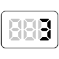

【003】計算結果をコンソールに表示

- プロンプト例
JavaScriptで四則演算の問題を５問作成して
- 変数を利用しないで
学習ポイント
| + | 足し算 |
|---|---|
| - | 引き算 |
| * | 掛け算 |
| / | 割り算 |
| () | 計算の優先順位を変える |
問題①（足し算）
15 + 27 を計算し、console.log に出力してください。
console.log(15 + 27);
問題②（引き算）
100 − 58 を計算し、console.log に出力してください。
console.log(100 - 58);
問題③（掛け算）
12 × 7 を計算し、console.log に出力してください。
console.log(12 * 7);
問題④（割り算）
144 ÷ 12 を計算し、console.log に出力してください。
console.log(144 / 12);
問題⑤（四則混合）
(8 + 4) × 3 − 6 ÷ 2 を計算し、console.log に出力してください。
console.log((8 + 4) * 3 - 6 / 2);
🔹 剰余演算（%）
- プロンプト例
剰余算の例も
「%」は、割り算したときの「余り」を求める演算子 です。
10 % 3 // → 1
「10 ÷ 3 = 3 あまり 1」の意味
問題①
9 ÷ 2 の余り を表示してください。
console.log(9 % 2);
問題②
25 ÷ 6 の余り を表示してください。
console.log(25 % 6);
問題③
30 ÷ 4 の余り を表示してください。
console.log(30 % 4);
問題④
100 ÷ 9 の余り を表示してください。
console.log(100 % 9);
問題⑤（応用）
(20 + 7) ÷ 5 の余り を表示してください。
console.log((20 + 7) % 5);
🔹 剰余演算の重要な活用例
① 偶数・奇数の判定
console.log(10 % 2); // 0 → 偶数 console.log(7 % 2); // 1 → 奇数
【ルール】
- 2で割って余り0 → 偶数
- 2で割って余り1 → 奇数
② 繰り返し処理の周期判定（超重要）
console.log(1 % 3); console.log(2 % 3); console.log(3 % 3); console.log(4 % 3); console.log(5 % 3);
【結果】
1 2 0 1 2
➡ 0,1,2 が繰り返される → ループ処理と相性抜群